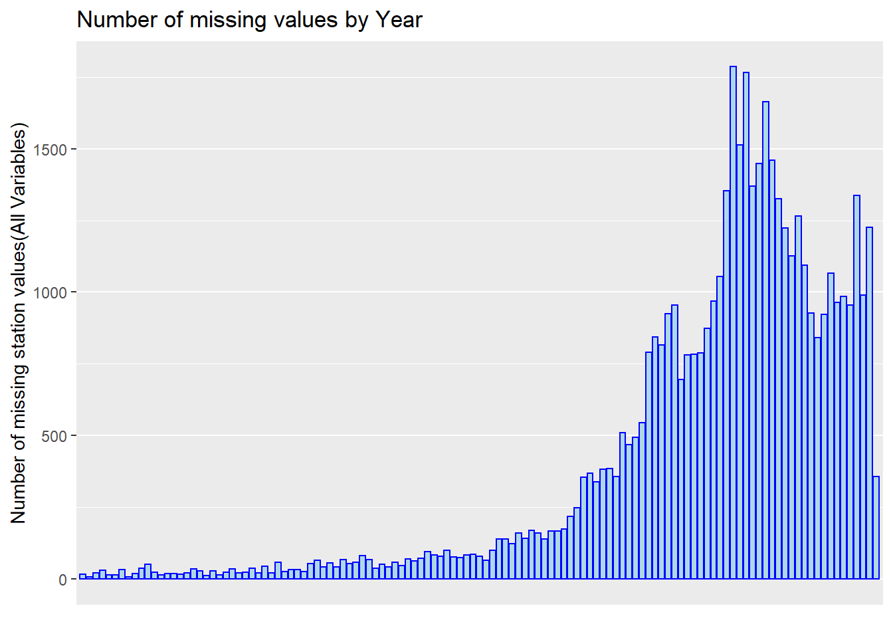
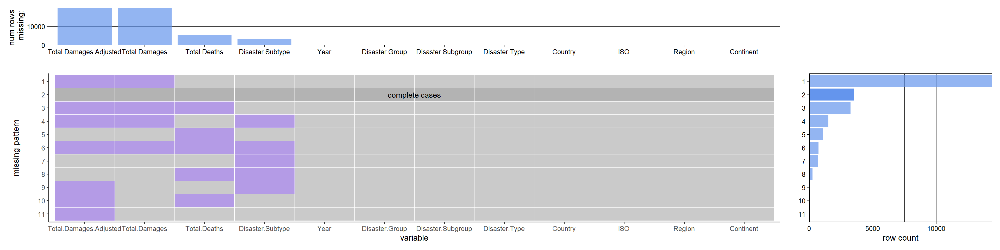
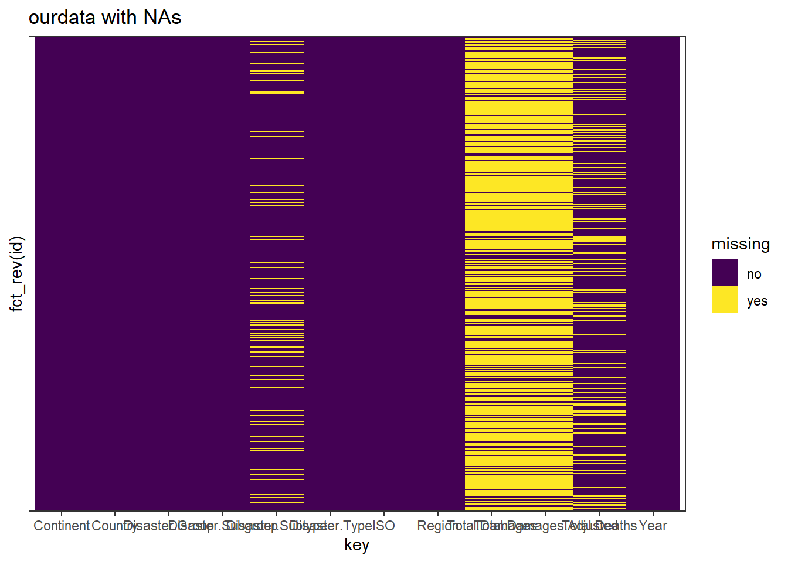
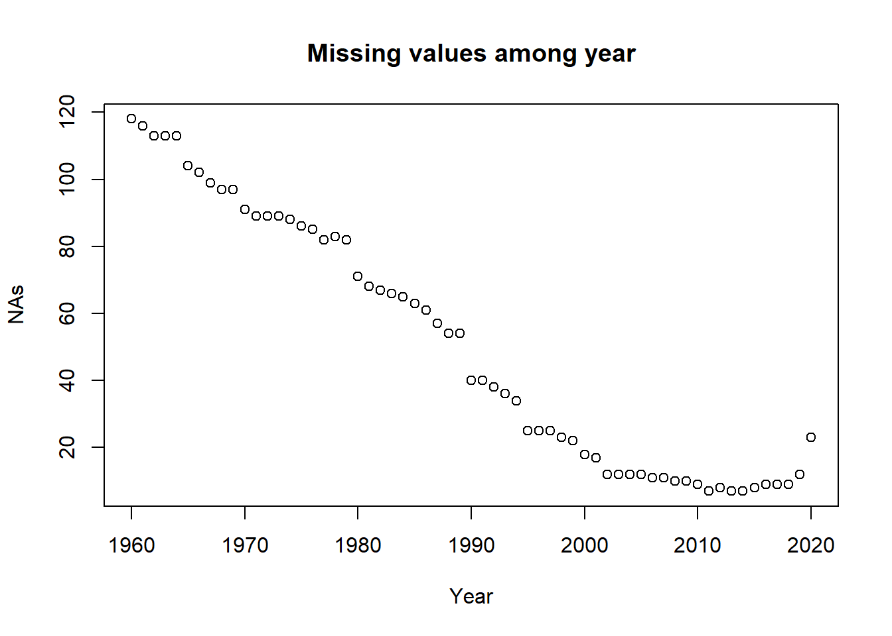

Chapter 4 Missing values
4.1 Disaster dataset
disaster = read.csv("data/disaster_missing.csv") %>%
select(-X)4.1.1 By row
rowSums(is.na(disaster)) %>%
sort(decreasing = TRUE) %>%
table()## .
## 0 1 2 3 4
## 3555 1748 14669 4781 742It shows that the missing value numbers with different rows. There are for 3555 rows with no missing values, 1748 rows with 1 missing values, 14669 rows with 2 missing values, 4781 rows with 3 missing values and 742 rows with 4 missing values.
Also we want to visualize it by year.
missing <- disaster %>%
group_by(Year) %>%
summarise(sum.na = sum(is.na(Total.Deaths)+is.na(Total.Damages)+is.na(Disaster.Subtype)+is.na(Total.Damages.Adjusted)))
ggplot(missing, aes(x = Year, y = sum.na)) +
geom_col(color = "blue", fill = "lightblue") +
ggtitle("Number of missing values by Year") +
xlab("") +
ylab("Number of missing station values(All Variables)") +
theme(axis.text.x = element_text(angle = 45)) +
scale_x_discrete(breaks = c('1900','1910','1920','1930','1940','1950','1960','1970','1980','1990','2000','2010','2020'))
It shows that the missing value has a increasing trend among all years because the data records are increasing over year.
4.1.2 By Column
colSums(is.na(disaster)) %>%
sort(decreasing = TRUE)## Total.Damages.Adjusted Total.Damages Total.Deaths
## 19931 19917 5334
## Disaster.Subtype Year Disaster.Group
## 3215 0 0
## Disaster.Subgroup Disaster.Type Country
## 0 0 0
## ISO Region Continent
## 0 0 0plot_missing(disaster, percent = FALSE)
It shows that damage and adj.damage gets the most nas, then deaths and subtype.
4.1.3 By Value
tidydata <- disaster %>%
rownames_to_column("id") %>%
gather(key, value, -id) %>%
mutate(missing = ifelse(is.na(value), "yes", "no"))
ggplot(tidydata, aes(x = key, y = fct_rev(id), fill = missing)) +
geom_tile() +
ggtitle("ourdata with NAs") +
scale_fill_viridis_d() + # discrete scale
theme_bw()+
scale_y_discrete(breaks = c())
It gives a look at the na for each value. However I don’t think that there is a relation between the nas in different variable.
4.2 Covid Dataset
covid = read.csv("data/covid.csv") %>%
select(-X)sum(is.na(covid))## [1] 0There is no NA value in this data set.
4.3 GDP Dataset
GDP = read.csv("data/GDP.csv")This is a time series data from 1960 to 2020 for the countries around the world, we want to check the na for each countries and for each Year.
4.3.1 For countries
We want to see how many NA are there for each country
missing = cbind(GDP[,1:2], NAs = rowSums(matrix(as.numeric(is.na(GDP[,-c(1,2)])), nrow = nrow(GDP)))) %>%
arrange(desc(NAs))
head(missing, 10)## Country.Name Country.Code NAs
## 1 British Virgin Islands VGB 61
## 2 Gibraltar GIB 61
## 3 Korea, Dem. People's Rep. PRK 61
## 4 St. Martin (French part) MAF 61
## 5 Sint Maarten (Dutch part) SXM 53
## 6 South Sudan SSD 53
## 7 Channel Islands CHI 51
## 8 Curacao CUW 51
## 9 Nauru NRU 50
## 10 Kosovo XKX 48As we can see, the missing value are tend to appear on those small countries where data are hard to collect.
4.3.2 For Year
Now we want to know the missing value among time
missing = cbind(Year = 1960:2020, NAs = colSums(matrix(as.numeric(is.na(GDP[,-c(1,2)])), nrow = nrow(GDP))))
plot(missing, main = 'Missing values among year')
Here as we can see, the missing values are reducing with the year increase. That’s because with the development of the technology, we have more and easier access to collect the data.